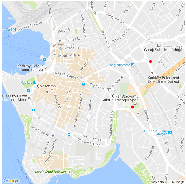

Haritalama
Uygulama içinde ve eğer GPS bağlantısı kurulduysa Map düğmesine basılarak o anda olunan yerin haritası alınabilir. Haritalar bir zip dosyası içinde, örnek haritalar nomadicterrain/map/README.md icinde zip dosya baglantilarinda.
Bu dosyaları SDCARD/Bass dizini altına kopyalamak yeterli, dosyalara
işaret eden menü seçenekleri kodun içinde. Daha fazla harita eklemek
isteyenler kodda değişim yapmalı.
Dosya içindeki harita parçaları png dosyaları olarak kayıtlı, hangi GPS kordinatının haritası oldukları dosya isminde kodlanmış halde, kordinat haritanın orta noktasıdır.
Android / Java tekniği olarak faydalı olabilecek bazı kod bölümleri:
ZIP içinden dosya okumak: Tüm haritalar zip içinde, zip içine bakıp oradaki dosya isimlerini almak, sonra istenilen tek dosyayı okuma tekniği var.
Düzenli İfadeler (Regex): Harita orta noktası kordinatı harita dosya isminde kodlu olduğu için kordinatın geri alınması dosya ismini regex ile tarayıp içinden GPS enlem, boylam verisini almakla oluyor. Dosya isminde kordinat kodlama basitlik amaçlı yapıldı, eğer ayrı bir metin dosyasında kayıt olsaydı idare etmek zorlaşırdı. Ana amaç her zaman kod (veri) idaresinde kolaylık.
Haritalari nasil aldik? Google'in statik harita imajlari indirmek icin guzel bir API'si var, "Static Maps API" deniyor.
https://developers.google.com/maps/documentation/static-maps/
Bu APİ'yi kullanmak için bir API anahtarı yaratmak lazım, "Get Key" ile bu yapılabilir (bir proje ile alakalandırmak gerekiyor, bu proje
https://console.cloud.google.com
üzerinden yaratılabilir.
API alındıktan sonra, iki enlem/boylam arasına düşen tüm bölgeyi bir
dörtgen parçalara ayırabiliriz, ve bu parçaların köşe noktalarındaki
enlem/boylam merkezli belli büyüklükteki haritaları teker teker
indiririz. Alttaki örnek İstanbul'daki iki kordinat arasını 2x2 yani 4
bölgeye bölüyor, ve haritaları indiriyor (önce istanbul adında bir
alt dizin yaratın).
import itertools, time
import pandas as pd, time
import numpy as np
import matplotlib.pyplot as plt
from math import sin, cos, sqrt, atan2, radians
from io import BytesIO
import Image, urllib, os.path
def get_map(lat, lon, region, zoom):
api = "[API ANAHTARI BURAYA]"
url = "http://maps.googleapis.com/maps/api/staticmap?center=" + \
"%f,%f&size=800x800&zoom=%d&key=%s" % (lat,lon,zoom,api)
print url
lats = str(lat).replace(".","_")
lons = str(lon).replace(".","_")
fout = "%s/%s_map_%s_%s.png" % (region,region,lats,lons)
if os.path.isfile(fout):
print "Already downloaded..."
return False
buffer = BytesIO(urllib.urlopen(url).read())
image = Image.open(buffer)
image.save(fout)
return True
def get_maps(c1,c2,px,py,region,zoom=15):
a= np.linspace(min(c1[0],c2[0]), max(c1[0],c2[0]), px)
b= np.linspace(min(c1[1],c2[1]), max(c1[1],c2[1]), py)
aa,bb = np.meshgrid(a,b)
for x,y in itertools.izip(aa.flatten(),bb.flatten()):
if get_map(x,y,region,zoom) == False: continue
if __name__ == "__main__":
c1 = (41.061257, 28.99161); c2 = (41.068375, 28.998614)
get_maps(c1,c2,2,2,region="istanbul")
Haritayı Dizüstünde Kullanmak
Geliştirme ortamında üstteki uygulamanın kullandığı aynı harita, zip dosyalarını üzerinden herhangi bir enlem / boylamı harita üzerinde göstermek için kullanılabilir. Örnek olarak 40.987659,29.036428, diğeri bir restoran 40.992186,29.039228. Grafik altta,
import pandas as pd, io
from PIL import Image
import os, glob, re, zipfile
import pandas as pd
import numpy as np
import matplotlib.pyplot as plt
# enlem/boylam ve pikseller arasinda gecis icin
SCALEX = 23000.
SCALEY = -35000.
def plot(res4,outfile):
"""
Birinci noktayi baz alarak gerekli harita inajini bul, ve diger
tum noktalari bu harita uzerinde grafikle
"""
dir = '/home/burak/Documents/Dropbox/Public/data/'
zfile = dir + 'istanbul.zip'
imgcoord = []
with zipfile.ZipFile(zfile, 'r') as z:
for f in z.namelist():
# the lat/lon middle of the map is encoded in the map's
# filename
tmp = re.findall("map_(-*\d+)_(\d+)_(-*\d+)_(\d+)",f,re.DOTALL)[0]
imgcoord.append([float(tmp[0] + "." + tmp[1]), float(tmp[2] + "." + tmp[3]), f])
imgcoord2 = pd.DataFrame(imgcoord,columns=['lat','lon','file'])
dists = imgcoord2.apply(lambda x: np.sqrt((x['lat']-res4[0][0])**2 + (x['lon']-res4[0][1])**2), axis=1)
print dists.argmin()
# the closest map is picked
found = imgcoord2.ix[dists.argmin()]
print found.file
mapcenter = np.array(found[['lat','lon']])
print mapcenter
with zipfile.ZipFile(zfile, 'r') as z:
im = Image.open(z.open(found.file))
nim = np.array(im)
c = nim.shape[0] / 2, nim.shape[0] / 2
plt.axis('off')
fig=plt.imshow(im)
fig.axes.get_xaxis().set_visible(False)
fig.axes.get_yaxis().set_visible(False)
plt.imshow(im)
for [lat,lon] in res4:
dx,dy=((lon-mapcenter[1])*SCALEX,(lat-mapcenter[0])*SCALEY)
xx = c[0]+dx
yy = c[1]+dy
if xx > nim.shape[0] or yy > nim.shape[1] or xx<0 or yy<0: continue
plt.plot(xx,yy,'r.')
plt.hold(True)
plt.savefig(outfile, bbox_inches='tight', pad_inches = 0)
pts = np.array([[40.987659,29.036428],[40.992186,29.039228]])
plot(pts,'istanbul.png')
151
istanbul_map_40_9890312632_29_0305433684.png
[40.989031263199998 29.0305433684]

Diger Olcekler
Alttaki kullanımda Google Static Map API'sinin daha açık bir kullanımını görelim, üstte zip dosyasından haritaları aldık, şimdi direk Google'dan alalım, kaydedelim, ve o harita üzerinde ek grafiklemeler yapalım.
import pandas as pd, time
import numpy as np
import matplotlib.pyplot as plt
from math import sin, cos, sqrt, atan2, radians
from io import BytesIO
import Image, urllib, os.path
def get_map(center_lat, center_lon, marker_lat, marker_lon, region):
zoom = 18
api = "[API ANAHTARI BURAYA]"
url = "http://maps.googleapis.com/maps/api/staticmap?center=" + \
"%f,%f&size=800x800&zoom=%d&key=%s" % (center_lat,center_lon,zoom,api)
url += "&markers="
url += str(marker_lat) + "," + str(marker_lon)
lats = str(center_lat).replace(".","_")
lons = str(center_lon).replace(".","_")
fout = "%s_%s_%s.png" % (region,lats,lons)
buffer = BytesIO(urllib.urlopen(url).read())
image = Image.open(buffer)
image.save(fout)
return fout
fout = get_map(40.977857, 29.089380, 40.977257, 29.089080, "ist")
print fout
ist_40_977857_29_08938.png
Fonksiyona harita merkezinin kordinatı, tek bir işaret için (marker)
bir kordinat geçtik, ayrıca harita dosya isimlendirmesi için ek bir
parametre verdik. Aslında birden fazla işaret markers ile GM'den
istenebilir, fakat işaretleme işlemini haritayı aldıktan sonra bizim
çevrimdışı ortamda kendimizin yapabilmesi daha iyi olur, grafikleme
rutinleri kullanarak her türlü ek çizimi hızlı bir şekilde
yapabiliriz. GM'ye tek işaret yaptırıyoruz, kontrol amaçlı olarak.
Alttaki kodda verili kordinat listesini bir çizgi olarak nasıl birleştirip grafikleyebiliriz bunu görüyoruz.
from PIL import Image, ImageDraw, ImageFont
import re
def plot_line(mapfile, pts):
SCALEX = 1.8e5; SCALEY = -2.5e5
tmp = re.findall("(-*\d+)_(\d+)_(-*\d+)_(\d+)",mapfile,re.DOTALL)[0]
nim = Image.open(mapfile)
w,h = np.array(nim).shape
c = (w/2,h/2)
center_lat = float(tmp[0] + "." + tmp[1])
center_lon = float(tmp[2] + "." + tmp[3])
line = []
for i,pt in enumerate(pts):
dx,dy=((pt[1]-center_lon)*SCALEX,(pt[0]-center_lat)*SCALEY)
line.append((c[0]+dx,c[1]+dy))
d = ImageDraw.Draw(nim)
d.line(line)
nim.save('map1.png')
pts = [[40.977257, 29.089080], [40.977357, 29.089080], [40.977657, 29.089080],
[40.977657, 29.089180], [40.977657, 29.089480], [40.977657, 29.089880],
]
plot_line(fout, pts)
Harita merkezi kordinatını harita dosya isminde kodladık, böylece
merkezin kaybolması mümkün değil, istediğimiz an bu bilgiyi
alabiliriz. Grafikleme için enlem/boylam kordinatlarının bu merkezden
olan farklarını bir piksel farkı ile çarpıyoruz, SCALEX,SCALEY
sabitleri bu işi hallediyor. Bu değerler deneme / yanılma ile bulundu,
farklı GM odaklama seviyesine göre farklı olacaklardır.
Üstteki fonksiyonda çizgi için ImageDraw.Draw.line çağrısını
kullandık, ImageDraw.Draw'ın ek bazı çağrıları var, tek nokta, harf,
sayı, vs. pek çok ek grafikleme farklı renklerde bu çağrılar ile
yapılabilir.